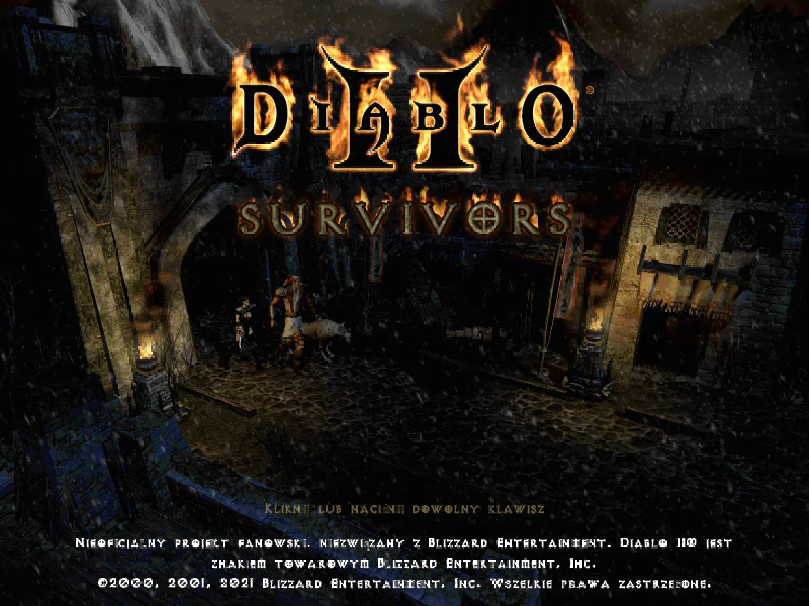
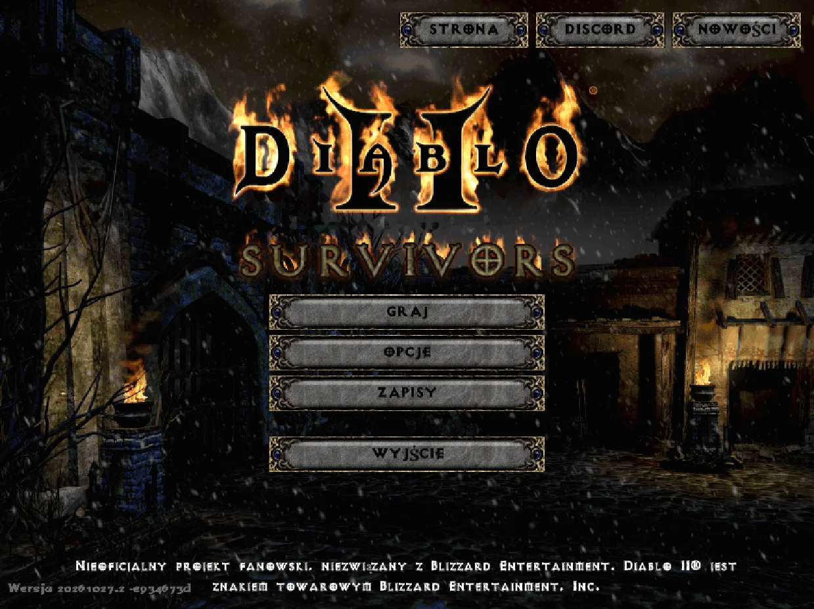
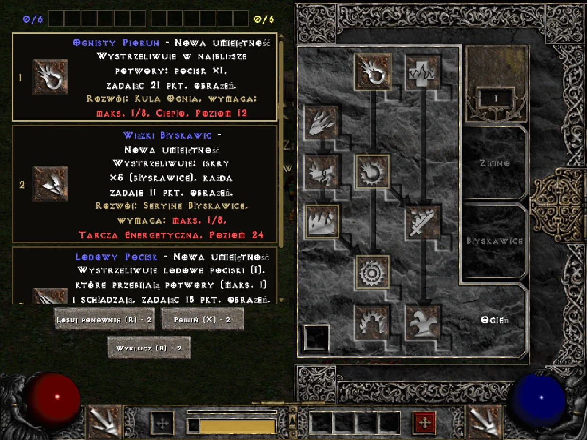
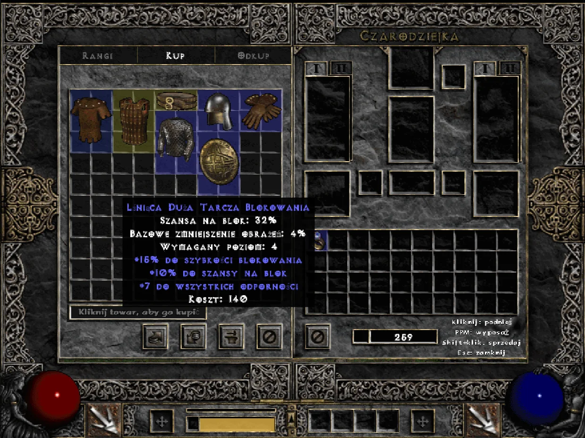
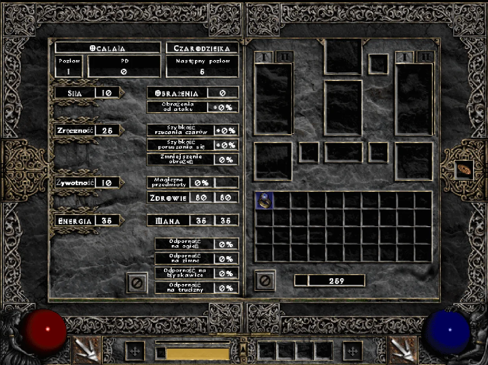
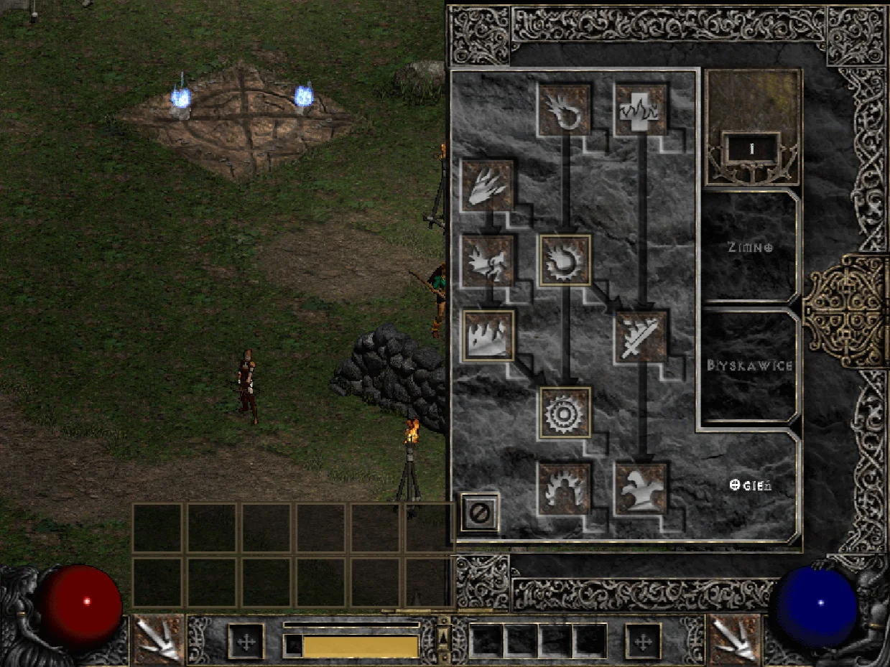
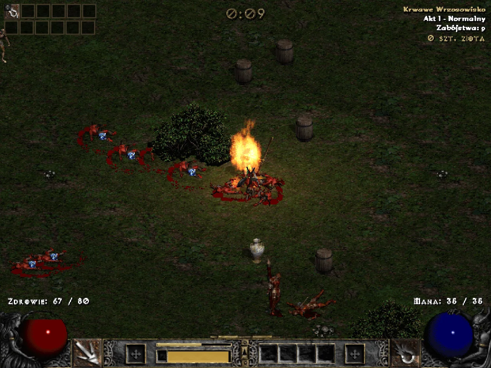
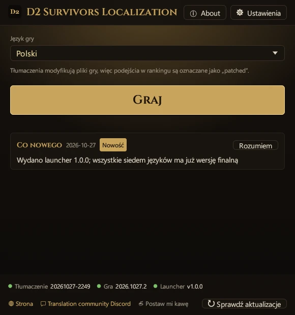

D2 Survivors
Autor: framara
Darmowa, nieoficjalna gra fanowska w stylu survivors-like osadzona w świecie Diablo II. Ten projekt tłumaczenia nie jest powiązany z autorem gry; problemy z samą grą zgłaszaj oficjalnymi kanałami.
Nieoficjalny projekt fanowski
Zagraj w Diablo 2 Survivors po polsku. To darmowy projekt fanowski: spolszczenie tłumaczy samą grę, a nie tylko poradnik: interfejs, umiejętności, przedmioty, potwory i karty awansu, z oficjalnymi nazwami z Diablo II: Resurrected. Launcher instaluje, aktualizuje i przywraca oryginał jednym kliknięciem.
Oficjalna wersja przeglądarkowa została usunięta, więc tłumaczenie działa tylko w wersji na komputer (launcher na Windows).
Masz zapis z wersji przeglądarkowej? Otwórz „Przenieś zapis z przeglądarki” (oficjalna strona, po angielsku) w tej samej przeglądarce, w której toczyła się gra, pobierz zapis jako plik .txt, a potem w menu głównym wersji na komputer wybierz ZAPISY (SAVES) → Otwórz plik zapisu (Open a save file) i wskaż ten plik.








Ekrany gry: D2 Survivors (framara), na własnych plikach Diablo II gracza
Ten projekt zawiera wyłącznie tłumaczenie, bez plików gry. Zanim zaczniesz, pobierz D2 Survivors i Diablo II z oficjalnych źródeł poniżej.
Autor: framara
Darmowa, nieoficjalna gra fanowska w stylu survivors-like osadzona w świecie Diablo II. Ten projekt tłumaczenia nie jest powiązany z autorem gry; problemy z samą grą zgłaszaj oficjalnymi kanałami.
Blizzard Entertainment
D2 Survivors korzysta z grafiki i dźwięków Diablo II z twojego komputera, więc potrzebujesz własnej kopii Diablo II: Resurrected albo Diablo II + Lord of Destruction (patch 1.14).
Nazewnictwo: nazwy umiejętności, przedmiotów, potworów i krain pochodzą z oficjalnego tłumaczenia Diablo II: Resurrected; resztę przetłumaczył ten projekt.
Gotowe i wydane: chiński (tradycyjny), chiński (uproszczony), japoński, niemiecki, francuski, rosyjski i polski.
Aktualizacje tłumaczeń, języków i launchera. Launcher za każdym razem pobiera najnowsze tłumaczenie — nic nie trzeba pobierać ponownie.
Lista zmian od autora D2 Survivors — my zajmujemy się tylko tłumaczeniem.
Lista zmian od autora D2 Survivors — my zajmujemy się tylko tłumaczeniem.
Lista zmian od autora D2 Survivors — my zajmujemy się tylko tłumaczeniem.
Nie musisz ręcznie zmieniać plików gry — wszystko robi launcher. Najpierw zamknij grę. Launcher wyświetla się w języku, który wybierzesz.
Pobierz wersję na komputer z oficjalnej strony D2 Survivors, wskaż w ustawieniach folder z Diablo II i sprawdź, czy gra się uruchamia.
Pobierz d2s-launcher.exe i umieść go w dowolnym folderze. Instalacja nie jest potrzebna.
Przy pierwszym uruchomieniu zobaczysz ekran ze wszystkimi językami, każdy zapisany we własnym języku. Kliknij swój, a potem „→” — launcher i tłumaczenie gry będą w tym języku.
① „Gra”: launcher znajduje D2 Survivors (domyślnie w %LOCALAPPDATA%\Programs\D2 Survivors; jeśli gra jest gdzie indziej — „Wybierz folder…”). ② „Diablo II”: szuka twojego Diablo II: Resurrected lub klasycznego Diablo II; jeśli go nie znajdzie, możesz kliknąć „Pomiń”. ③ „Gotowe”: jeśli chcesz, kliknij „Utwórz skrót na pulpicie”, a potem „Graj”. Za pierwszym razem pobierze się tłumaczenie, a oryginalny app.asar zostanie zapisany jako kopia zapasowa.
Domyślnie każde uruchomienie pobiera najnowsze tłumaczenie („Aktualizuj tłumaczenia przy uruchomieniu” w „Ustawieniach”), a po aktualizacji gry zostaje ono automatycznie zastosowane ponownie. Język zmienisz w głównym oknie, w polu „Język gry”.
app.asar wróci na miejsce.%LOCALAPPDATA%\D2SurvivorsLauncher.Aby zrobić własny skrót, ustaw tę linię jako jego element docelowy — gra uruchomi się w wybranym języku bez okna launchera. (Skrót z „Utwórz skrót na pulpicie” otwiera okno i od razu uruchamia grę.)
d2s-launcher.exe --launch --lang pl--launch--play--lang <id>--no-update--update--restore--self-update--statusNie. To nieoficjalne tłumaczenie fanowskie, niezwiązane z twórcami D2 Survivors ani z Blizzard Entertainment.
Kod — tak. Źródła launchera, tej strony i narzędzi są na GitHubie na licencji MIT. Launcher jest budowany automatycznie z tych publicznych źródeł przez GitHub Actions (historia kompilacji), a do każdego wydania dołączony jest d2s-launcher.exe.sha256, więc możesz go sprawdzić samodzielnie.
Dane tłumaczenia (słowniki) nie mają jeszcze otwartej licencji — wszelkie prawa zastrzeżone, zob. dict/LICENSE. Zawarte w nich oficjalne nazwy należą do Blizzard Entertainment.
Jest gotowa: wszystko jest przetłumaczone i sprawdzone w grze pod kątem pominięć. Potem cały interfejs i 300 losowych wpisów przeczytano jeszcze raz niezależnie, co dało około 480 poprawek w całym słowniku. Nazwy przedmiotów magicznych i rzadkich są składane zgodnie z rodzajem gramatycznym, np. „Masywne Rękawice Lisa”, „Bestialskie Ostrze”, „Karmazynowy Kaptur Energii”, a bohaterki noszą żeńskie tytuły. Około 67% nazewnictwa pochodzi wprost z oficjalnego polskiego tłumaczenia Diablo II: Resurrected. Polskie litery (ą, ć, ę, ł, ń, ś, ź, ż) w wersji na komputer rysowane są czcionkami z D2R — Exocet w nagłówkach i Formal436 w tekście — w tym samym rozmiarze co reszta liter.
Jeśli zauważysz błąd, daj nam znać.
Na razie nie. Launcher jest tylko na Windows, a oficjalna wersja przeglądarkowa została usunięta, więc nasza zakładka też już nie działa. Na Macu, Linuksie i telefonie tłumaczenia nie da się na razie używać.
Nie. Launcher podmienia tylko resources\app.asar w folderze gry, wcześniej robiąc kopię oryginału. Zapisy leżą gdzie indziej i nie są ani czytane, ani zmieniane.
Tak. Twórca zostawił oficjalną stronę do przenoszenia zapisów (tylko po angielsku i koreańsku). Odnajduje ona w przeglądarce zapis z wersji przeglądarkowej i pozwala pobrać go jako plik .txt.
Koniecznie otwórz ją w tej samej przeglądarce, w której grało się w wersję przeglądarkową (i w tym samym profilu przeglądarki), inaczej zapis nie zostanie znaleziony. Inna przeglądarka ani okno prywatne go nie znajdą.
Następnie otwórz wersję na komputer, w menu głównym wybierz ZAPISY (SAVES) → Otwórz plik zapisu (Open a save file) i wskaż pobrany plik .txt. Zapisów w trybie Hardkor (Hardcore) nie da się przenieść, tak jak w samej grze.
Aktualizacja podmienia app.asar, więc tłumaczenie znika, dopóki znów nie uruchomisz gry przez launcher lub skrót — wtedy zostanie zastosowane ponownie.
Jeśli nowa wersja zmieniła się zbyt mocno, launcher niczego nie wymusza: uruchamia oryginalną grę i informuje, że tłumaczenie jest poprawiane. Gdy będzie gotowe, przy następnym uruchomieniu zastosuje się samo — nic nie musisz robić.
Tłumaczenie zajmuje wbudowane w grę miejsce języka koreańskiego, więc w menu w tym miejscu widać nazwę wybranego języka. Aby grać po koreańsku, wybierz w launcherze „한국어 (원본)”.
Cały tekst gry jest przetłumaczony i sprawdzony w grze pod kątem pominięć. Jeśli widzisz angielski, najpewniej aktualizacja gry dodała nowy tekst; tłumaczenie uzupełni go w jednej z kolejnych aktualizacji, a launcher pobierze ją automatycznie. Jeśli tekst wciąż jest po angielsku, daj nam znać.
Po wybraniu języka tłumaczenia gra oznacza wpisy jako patched; aby trafiały do rankingu normalnie, wybierz w launcherze w „Języku gry” English.
Launcher nie ma podpisu cyfrowego (certyfikat kosztuje co roku), więc Windows SmartScreen ostrzega, dopóki nie pobierze go wystarczająco dużo osób.
Nie jest podpisany, ale kod źródłowy i proces kompilacji launchera są publiczne.
Kliknij „Więcej informacji”, a potem „Uruchom mimo to” — Windows nie zapyta ponownie. Pobieraj launcher tylko z tej strony lub z GitHub Releases. Każde wydanie zawiera d2s-launcher.exe.sha256, który możesz sprawdzić poleceniem certutil -hashfile d2s-launcher.exe SHA256.
Jeśli przeglądarka napisze, że plik jest rzadko pobierany, wybierz w menu pobierania „Zachowaj”.
Nie. Sama gra pozwala w nazwach postaci tylko na angielskie litery (bez ą, ę, ł…) i koreański.
Literówki, nieprzetłumaczone teksty i problemy z launcherem zgłaszaj na Discordzie społeczności tłumaczy, gdzie publikujemy też nowości.
Błędy tłumaczenia i programu możesz też zgłaszać w GitHub Issues.
Problemy z samą grą (niezwiązane z tłumaczeniem) zgłaszaj na oficjalnym Discordzie D2 Survivors (po angielsku).
Chętnie! Wszystkie języki są już wydane, ale tłumaczenie zawsze można poprawić. Jeśli zauważysz niezgrabne sformułowanie lub literówkę, zwłaszcza w swoim ojczystym języku, daj nam znać. Napisz do nas tutaj.